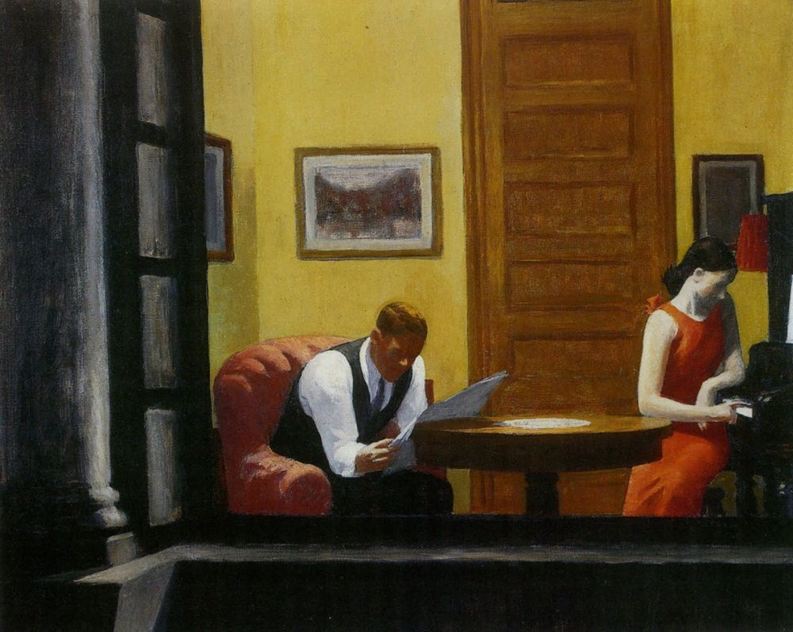
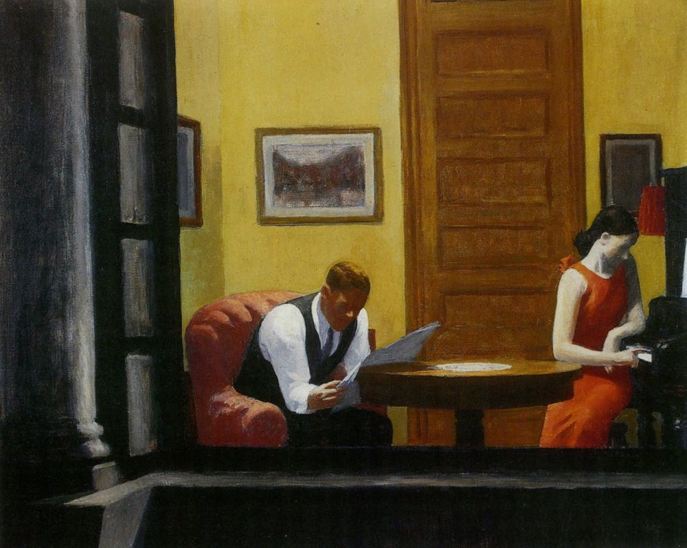

Info
Tribute Page Info
This webpage is dedicated to the American artist Edward Hopper, born on July 22 1882 in Nymack, New York from middle class parents. Hopper's artwork illustrates his interpretation of loneliness and the emptiness of urban life through his observation of streets, architecture and women.
From 1900 to 1906, Hopper studies at the New York School of Arts also learning illustration.
Between 1906 and 1910, he travels to Europe but it is in Paris that he discovers Impressionism, which will greately influence his work.
His paintings greatly depict the tensions between rural and urban environment as well as exterior light opposed to interior settings.
Edward Hopper died in New York City on May 15 1967 at the age of 84 years old.
Timeline

1913 - Struggle
Hopper struggled to gain recognition before selling his first painting Sailing (1911) at the Armory Show in New York in 1913.
He will work as an illustrator before making his breakthrough.
It is only at 37 years old that Hopper will start to gain recognition for his Art by being invited to a one-person exhibit at the Whitney Club.
1923 - Breakthrough
Since 1920, Edward Hopper is able to showcase his Art through exhibits.
In 1923, his medium shifts to watercolour for which he receives the Logen Prize from the Chicago Society of Etchers. That same year, he marries Josephine Nivision a fellow student from the NY School of Arts, who will pose for many of his pieces.
House by the Railroad (1925) will be his first painting acquired by The Museum of Modern Art, New York.
1930 - Women at work
Edward Hopper observes women working in the city; their similarities and oppositions.
The upper-class women alongside the working-class.The cleaners, waitresses and office workers as well as the middle-class client as in Tables for Ladies (1930).
1942 - Urban Life & Loneliness
New York City becomes the canvas of Hopper. He gets inpired architecture, cafés, hotels and his love for Cinema, but stands as an observer capturing people absorbed in activities or their own thoughts.
Loneliness becomes a central theme of his work, while his paintings are recognised as contemporary such as in Nighthawks (1942).

1951 - Interior vs Exterior
Light becomes the central study of Hopper's artwork. He depicts the tension between interior and exterior environments like in Rooms by the Sea (1951).
He will say “My aim in painting has always been the most exact transcription possible of my most intimate impression of nature. ”
1955 - Rural America
Edward Hopper and his wife frequently travelled around America particularly in Massachussetts, where he and his wife bought a summer house in Cape Cod.
His only painting of an African-American woman is shown in South Carolina Morning (1955) recollecting a trip him and his wife made years earlier. Again, Hopper creates tension between the austerity of the wildlife, the depriciating building and the luminuous colours of the South.
1965 - Last Painting
Hopper's final work was Two Comedians (1965), which according to his wife, depicted the both of them taking a final bow.
More than a thousand of his paintings were donated to the Whitney Museum of American Art when Josephine died, less than a year after him. Other major artwork can be found at the Museum of Modern Art and the Art Institute of Chicago.
Gallery
{kind=link}

 

{kind=link}
{kind=link}
{kind=link}
{kind=link}
{kind=link}
{kind=link}
{kind=link}
{kind=link}
{kind=link}
{kind=link}
{kind=link}
{kind=link}